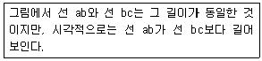
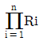
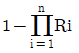
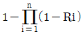
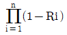
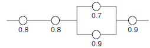

건설안전산업기사 (2004-03-07 기출문제)
1과목: 산업안전관리론
1. 도수율 21.12인 사업장에서 한 작업자가 평생 작업을 한다면 몇 건의 재해를 당하겠는가? (단, 한 작업자의 평생 근로연수는 40년으로 계산할 것.)
- 약 1건
- 약 2건
- 약 3건
- 약 4건
(정답률: 59%)

2. 현장에서 안전책임자 안전관리자는 근무 중에 안전완장을 착용해야 한다. 안전완장에 바탕색깔과 어떤 내용을 한글로 표시해야 하는가?
- 노란색, 직책
- 노란색, 성명
- 흰색, 직책
- 흰색, 성명
(정답률: 70%)
3. 안전조직에서 line system의 단점 중 옳은 것은?
- 비경제적 조직체제이다.
- 안전관리부와 생산부간의 유기적 협조가 곤란하다.
- 안전조직원은 전문가이어야 한다.
- 대규모 기업에서 채택이 곤란하다.
(정답률: 76%)
4. 피로측정법에서 생리학적 측정법이 아닌 것은?
- 정적근력작업
- 생리적 작업
- 신경적 작업
- 동적근력작업
(정답률: 30%)
5. 다음 중 직무 만족도에 영향을 주는 개인적 특성이 아닌것은?
- 일반적으로 직무 만족도는 연령에 따라 증가한다.
- 만성적 직무 불만족과 정서적 부적응간에는 긍정적인 상관이 있다.
- 교육수준이 높을수록 직무 불만족을 나타낸다.
- 직무의 수준이 높으면 직무의 만족도도 높다.
(정답률: 29%)
6. 다음 중 심리적이면서도 생리적인 요소를 모두 갖고 있는 요인은?
- 피로
- 동기저하
- 단조로움
- 근육긴장
(정답률: 73%)
7. 아래의 설명은 어떤 착시 현상과 관계가 깊은가?

- 헬몰쯔(Helmholz)의 착시
- 쾰러(Köhler)의 착시
- 뮬러-라이어(Müller-Lyer)의 착시
- 포겐 도르프(Poggendorf)의 착시
(정답률: 53%)
8. 단조로운 업무가 장시간 지속될 때 작업자의 감각기능 및 판단능력이 둔화 또는 마비되는 현상은?
- 망각현상
- 감각차단현상
- 피로현상
- 착각현상
(정답률: 67%)
9. 태도교육의 효과를 높이기 위하여 취할 수 있는 바람직한 교육방법은?
- 강의식
- 프로그램 학습법
- 토의식
- 문답식
(정답률: 30%)
10. 학습평가 도구의 기본적인 기준이 아닌 것은?
- 타당도(妥當度)
- 신뢰도(信賴度)
- 객관도(客觀度)
- 습숙도(習熟度)
(정답률: 58%)
11. 하인리히의 재해 구성 비율 법칙에 의하면, 중상해 2건이 발생하였다면 무상해 사고는 몇 건 발생 되었다고 볼 수 있는가?
- 29
- 60
- 300
- 600
(정답률: 70%)
12. 안전관리를 잘함으로서 생기는 결과가 아닌 것은?
- 생산성 감소
- 기업이 이미지 개선
- 바람직한 노사관계 형성
- 기업의 경제적 손실예방
(정답률: 91%)
13. 생산현장에서 작업에 종사하고 있는 작업자가 작업을 함에 있어서 가장 안전하고 능률적으로 작업을 할 수 있도록 작업내용 및 작업 단위별로 사용설비, 작업자, 작업조건 및 작업방법 등에 관해 규정해 놓은 것을 무엇이라 하는가?
- 안전수칙
- 기술표준
- 작업지도서
- 표준안전 작업방법
(정답률: 74%)
14. U자 걸이로 사용할 수 있는 안전대는 지름 250∼300mm, 너비 100mm 이상의 안전대를 장착하여 로프의 신축조절기는 각 링에 혹은 D링에 걸어 양드럼간의 중심거리를 약 500mm로 조절하여 인장 시험기로 시험할 때 인장강도는?
- 900 kgf
- 1100 kgf
- 1300 kgf
- 1500 kgf
(정답률: 20%)
15. 안전관리에 관한 계획에서 실시에 이르기까지 모든 권한이 포괄적이고 직선적으로 행사되며, 안전을 전문으로 분담하는 부서가 없는 안전관리조직은?
- 직계식 조직
- 참모식 조직
- 직계-참모식 조직
- 안전보건 조직
(정답률: 63%)
16. 스트레스(Stress)에 관한 설명중 적절한 것은?
- 스트레스상황에 직면하는 기회가 많을수록 스트레스 발생가능성은 낮아진다.
- 스트레스는 직무몰입과 생산성감소의 직접적인 원인이 된다.
- 스트레스는 부정적인 측면밖에 없다.
- 스트레스는 나쁜 일에서만 발생한다.
(정답률: 82%)
17. 안전모의 모체와 착장체, 머리고정대의 수평 간격은 얼마 이어야 하는가?
- 5mm 이상
- 5mm 미만
- 10mm 이상
- 10mm 미만
(정답률: 12%)
18. 안전교육 과정 중 "할 수 있다"라는 즉 피교육자가 그것을 스스로 행함으로서만 얻어지는 교육내용에 해당하는 것은?
- 안전지식의 교육
- 안전의식의 교육
- 안전태도의 교육
- 안전기능의 교육
(정답률: 18%)
19. 토의식 교육방법 중 몇 사람의 전문가에 의하여 과제에 관한 견해가 발표된 뒤 참가자로 하여금 의견이나 질문을 하게 하여 토의하는 방식은 다음 중 어느 것인가?
- 패널 디스커션(panel discussion)
- 심포지엄(symposium)
- 포럼(forum)
- 버즈 세션(buzz session)
(정답률: 33%)
20. 사업장의 연간 안전보건관리계획 수립의 구성요소 가운데 가장 핵심적이며 경영자의 재해방지를 위한 굳은 신념을 나타내는 것은?
- 안전목표
- 슬로건
- 기본방침
- 중점시책
(정답률: 20%)
2과목: 인간공학 및 시스템안전공학
21. 동작자의 태도를 보고 동작자의 상태를 파악하는 감시 방법은?
- Self monitoring
- Visual monitoring
- 생리학적 monitoring
- 반응에 의한 monitoring
(정답률: 37%)
22. 광원으로부터의 직사휘광의 처리방법에 해당되지 않는 것은?
- 광원의 휘도를 줄인다.
- 광원을 시선에서 가깝게 위치시킨다.
- 가리개 및 차양을 사용한다.
- 휘광원 주위를 밝게 하여 광속발산비를 줄인다.
(정답률: 60%)
23. 숫자, 영문자, 기하학적 형상, 구성 중 암호로서의 성능이 가장 좋은 것부터 순서의 배열은?
- 기하학적 형상 - 숫자 - 구성 - 영문자
- 구성 - 기하학적 형상 - 영문자 - 숫자
- 영문자 - 구성 - 숫자 - 기하학적 형상
- 숫자 - 영문자 - 기하학적 형상 - 구성
(정답률: 30%)
24. 시스템 안전을 위한 시스템 안전업무의 수행요건이 아닌 것은?
- 안전활동의 계획 및 관리
- 시스템 안전에 필요한 사람의 동일성 식별
- 시스템 안전에 대한 프로그램 해석ㆍ평가
- 다른 시스템 프로그램과 분리
(정답률: 46%)
25. 인간-기계체계의 신뢰도를 개선할 수 있는 방법이 아닌것은?
- 중복설계
- 충분한 여유용량
- 고가재료사용
- 부품개선
(정답률: 86%)
26. 색(色)의 3속성 중 하나인 명도(Value, Lightness)가 갖는 심리적 과정에 대한 설명 중 틀린 것은?
- 명도가 높을수록 작게 보이고, 명도가 낮을수록 크게 보인다.
- 명도가 높을수록 가깝게 보이고, 명도가 낮을수록 멀리 보인다.
- 명도가 높을수록 가볍게 느껴지고, 명도가 낮을수록 무겁게 느껴진다.
- 명도가 높을수록 빠르고 경쾌하게 느껴지고, 명도가 낮을수록 둔하고 느리게 느껴진다.
(정답률: 47%)
27. 다음 중 산업안전보건법상 정밀작업의 작업면 조명도에 맞는 것은?
- 750럭스 이상
- 300럭스 이상
- 150럭스 이상
- 75럭스 이상
(정답률: 44%)
28. 100건의 현장조사에서 20건의 불안전 상태가 체크되었으나 실제 불안전 상태는 40건 이었다고 한다. 인간에러 확률은 얼마인가?
- 0.1
- 0.2
- 0.4
- 0.5
(정답률: 70%)
29. 휴먼에러 중 안전교육을 통하여 제거할 수 있는 것은?
- command error
- multi error
- primary error
- secondary error
(정답률: 40%)
30. 다음 설명 중에서 틀린 것은?
- 기계설비의 보전방침 수립시 기계의 고장빈도를 파악하여 이용한다.
- 기계설비의 신뢰도를 유지 향상시키려면 보전 관리가 필요하다.
- 보전활동의 기준이 되는 보전방침은 명확히 제시되어야 한다.
- 생산시스템의 신뢰성 유지와 설비보전은 관계가 없다.
(정답률: 73%)
31. 신뢰도 r 인 요소 n개가 직렬로 구성된 시스템의 신뢰도는?




(정답률: 25%)
32. 기계의 신뢰도가 고장률이 일정한 지수분포를 나타내며, 고장률이 0.04일 때, 이 기계가 10시간동안 만족스럽게 작동할 확률은?
- 0.40
- 0.67
- 0.84
- 0.96
(정답률: 32%)
33. 다음 시스템의 신뢰도를 구하면 얼마인가?

- 0.3628
- 0.4608
- 0.5587
- 0.6667
(정답률: 50%)
34. "조명강도를 높인 결과 작업자들의 생산성이 향상 되었고 그 후 다시 조명강도를 낮추어도 생산성의 변화는 거의 없었다." 라는 결과는 다음 중 어느 실험의 결과인가?
- Heinrich 실험
- Compes 실험
- Birds 실험
- Hawthorne 실험
(정답률: 36%)
35. 산업현장에서 요통재해를 일으키는 작업적요소와 거리가 먼 것은?
- 국소진동작업
- 정적작업자세
- 인양 및 비틀림작업
- 과도한 중량물의 육체적 작업
(정답률: 30%)
36. 사고의 외적 요인으로서의 4M에 해당되지 않는 것은?
- Man
- Machine
- Material
- Media
(정답률: 46%)
37. 작업 영역을 설계할 때 조정가능성의 대상에 해당하지않는 것은?
- 작업대의 조정 가능성
- 작업공구의 조정 가능성
- 작업대상물의 조정 가능성
- 작업대와 관련된 작업자 자세의 조정 가능성
(정답률: 61%)
38. 인체의 생리적 변화를 측정하는 것과 거리가 먼 것은?
- 구조적 측정
- 심박수 측정
- 산소 소비량 측정
- 근전도 측정
(정답률: 73%)
39. 택시요금 계기와 같이 숫자로 표시되는 정량적 표시장치를 무엇이라 하는가?
- 계수형
- 동목형
- 동침형
- 수평형
(정답률: 63%)
40. 신호검출 이론의 응용분야가 아닌 것은?
- 품질검사
- 의료진단
- 의사결정
- 증인증언
(정답률: 30%)
3과목: 건설시공학
41. 지반조사에서 지지층과 기초구조의 형식이 결정된 후에 필요한 조사항목과 조사방법을 결정 또는 선택하는 조사는?
- 본조사
- 추가조사
- 사전조사
- 예비조사
(정답률: 42%)
42. 토공사용 장비가 아닌 것은?
- 로더(loader)
- 파워쇼벨(power shovel)
- 가이데릭(guy derrick)
- 클램쉘(clam shell)
(정답률: 58%)
43. 콘크리트의 내구성을 저하시키는 주요 요인으로 콘크리트의 중성화를 지목하는데 콘크리트의 중성화에 대한 기술 중 옳지 않은 것은 ?
- 일반적으로 혼합시멘트의 혼합비율이 높은 것과 경량 콘크리트는 중성화의 속도를 늦출 수 있다.
- 경화한 콘크리트의 수산화석회가 공기중의 탄산가스의 영향을 받아 탄산석회로 변화하는 현상을 콘크리트의 중성화라 한다.
- 콘크리트의 중성화에 의해 강재표면의 보호피막이 파괴되어 철근의 녹이 발생하고, 궁극적으로 피복 콘크리트를 파괴한다.
- 조강 포틀랜드시멘트를 사용하면 중성화를 늦출 수 있다.
(정답률: 18%)
44. 철골공사에서 원척도를 그릴 때 리벳을 배치하는 위치로 가장 적당한 것은?
- 부재의 중심선
- 게이지 라인
- 부재의 응력중심선
- 피치라인
(정답률: 32%)
45. 표준관입시험에 대한 설명 중 틀린 것은?
- 추의 무게는 63.5kg 이다.
- 추의 낙하 높이는 75cm 이다.
- 연약 점토질 지반의 조사에 사용된다.
- N값은 표준샘플러를 30cm 관입시키는 데 필요한 타격 횟수이다.
(정답률: 58%)
46. 콘크리트의 워커빌리티에 영향을 미치는 요소에 대한 설명 중 틀린 것은?
- 분말도가 높은 시멘트일수록 워커빌리티가 좋다.
- 부배합의 경우가 빈배합보다 워커빌리티가 좋다.
- 비빔온도가 높을수록 워커빌리티가 저하한다.
- 공기량을 증가시키면 워커빌리티가 좋아진다.
(정답률: 23%)
47. 용접 접합에 관한 기술 중 옳지 않은 것은?
- 가스용접은 충분한 강도를 기대할 수 없으나 절단용으로는 중요하다.
- 철골의 용접은 주로 금속 전기 아크 용접이 쓰인다.
- 전기 저항 용접은 강구조접합에 쓰인다.
- 아크 용접은 모재와 용접봉에 전류를 통하면 3,500℃의 고열을 내는 아크를 발생 시킨다.
(정답률: 27%)
48. 다음의 토류벽공법 중에서 현장에서 천공하여 철근을 배근하고 콘크리트를 타설하여 토류벽을 형성하는 공법은 어느 것인가?
- 소일시멘트 토류벽공법
- 엄지말뚝 토류벽공법
- 현장타설 콘크리트 토류벽공법
- 자립 토류벽공법
(정답률: 50%)
49. 설계변경이 예상되는 공사나 긴급 공사로서 설계도서의 완성을 기다리지 않고 착공하고자 하는 경우에 적합하며, 실제 공사비와 보수를 분리하여 지불하는 계약방식은?
- 총액계약
- 단가계약
- 실비정산보수가산계약
- 턴키계약
(정답률: 42%)
50. 콘크리트 공사에서 골재중의 수량을 측정할 때 표면수는 없지만 내부는 포화상태로 함수되어 있는 골재의 상태를 무엇이라 하는가?
- 절건상태
- 표건상태
- 기건상태
- 습윤상태
(정답률: 64%)
51. 시공계획서에 기재되어야 할 사항으로 부적합한 것은?
- 작업의 질과 양
- 시공조건
- 사용재료
- 마감시공도
(정답률: 30%)
52. 콘크리트의 수축을 방지하기 위하여 알루미늄분말을 섞어 시멘트풀에 기포가 생기게 하는 혼화제는 어느 것인가?
- 발포제
- 포졸란
- 플라이애쉬
- 표면활성제
(정답률: 24%)
53. 거리 측량 방법에서 정밀도가 가장 높은 것은?
- 스타디아 측량
- 천줄자
- 노끈
- 강재줄자
(정답률: 34%)
54. 수밀콘크리트는 어떤 목적으로 사용하는 것인가?
- 콘크리트의 방수성을 높이기 위하여
- 콘크리트의 조기강도를 높이기 위하여
- 수중콘크리트용으로 부어넣기 위하여
- 비나 눈이 오는 날의 콘크리트용으로 부어넣기 위하여
(정답률: 47%)
55. 방청도료 중 보일드유(boil)의 특징이 아닌 것은?
- 금속바탕과 잘 맞는다.
- 도장작업이 간단하다.
- 도막이 강하다.
- 건조시간이 길다.
(정답률: 0%)
56. 다음 지반개량공법의 종류에 속하지 않는 것은?
- 탈수다짐법
- 치환법
- 표준관입시험법
- 약액주입법
(정답률: 75%)
57. 다음 기초공사를 설명한 것 중 가장 부적절한 것은?
- 지정 또는 지정공사라 함은 일반적으로 기초슬래브 하부에 설치하는 버림콘크리트, 자갈다짐, 잡석다짐등 구조체를 떠받치는 지반개량을 의미한다.
- 지반이 상부구조를 지지할 만한 내력을 갖지 못했을 때는 말뚝이나 케이슨을 사용하여, 하부의 양질지반에 지지시키거나 지반을 개량하여 필요한 내력을 갖게 한다.
- 직접기초형식중 가장 오래된 형식인 나무말뚝은 항상 지하수면하에 있어야 지지력을 유지할 수 있다.
- 설계용의 지반조사 자료가 불충분하거나 없는 경우에는 공사에 필요한 조사를 다시 하는 것이 좋다.
(정답률: 40%)
58. 지반의 토질시험 과정에서 보링구멍을 이용하여 ＋자형 날개를 지반에 박고 이것을 회전시켜 점토의 점착력을 판 별 하는 토질시험방법은?
- 보링시험
- 베인전단시험
- 지내력시험
- 압밀시험
(정답률: 53%)
59. 벽체용 거푸집으로 거푸집과 벽체 마감공사를 위한 비계 틀을 일체로 제작한 거푸집은?
- Flying form
- Climbing form
- Travelling form
- Tunel form
(정답률: 53%)
60. 공동도급의 장점 중 옳지 않은 것은?
- 정밀시공이 가능하다.
- 공사수급의 경쟁완화 수단이 된다.
- 일식도급공사의 경우보다 경비가 줄어든다.
- 기술, 자본 및 위험 등의 부담을 분산시킬 수 있다.
(정답률: 75%)
4과목: 건설재료학
61. 다음은 점토소성제품에 대한 설명이다. 틀린 것은?
- 소지의 흡수율, 강도, 투명도 등에 따라 토기, 도기, 석기, 자기로 분류할 수 있다.
- 소성온도는 토기가 가장 낮고 자기가 가장 높다.
- 도기의 흡수성은 석기에 비하여 작다.
- 자기는 조직이 치밀하고 견고하여 주로 타일 및 위생 도기로 많이 사용된다.
(정답률: 56%)
62. 비철금속에 대한 기술 중 옳지 않은 것은?
- 청동은 동과 주석의 합금으로 건축장식철물 또는 미술공예재료에 사용된다.
- 황동은 동과 아연의 합금으로 산에는 침식되기 쉬우나 알칼리나 암모니아에는 침식되지 않는다.
- 알루미늄은 광선 및 열의 반사율이 높지만 연질이기 때문에 손상되기 쉽다.
- 연은 비중이 크고 전성, 연성이 풍부하며 산에는 저항성이 크나 알칼리에는 침식된다.
(정답률: 47%)
63. 콘크리트 배합에 관한 설명 중 옳지 않은 것은?
- 공기량을 증가시키면 시공연도는 개선된다.
- 동일 물시멘트비에서는 슬럼프값이 클수록 단위시멘트량이 증가한다.
- 절대용적배합은 각 재료를 콘크리트 1m3당 중량으로 표시한 배합이다.
- 배합강도는 일반적으로 설계기준강도보다 커야 한다.
(정답률: 15%)
64. 콘크리트 배합의 수정방법 중 올바른 것은?
- 공기량 1% 증가는 약 4∼6%의 강도증가를 가져온다.
- 콘크리트가 골재분리현상을 일으키면 잔골재율을 감소시킨다.
- 단위수량을 변화시킬 경우는 물시멘트비가 변하지 않도록 유의한다.
- 콘크리트의 점성이 지나치게 클 경우 세립이 많은 모래를 사용한다.
(정답률: 50%)
65. 벽, 기둥 등의 모서리를 보호하기 위하여 미장바름질을 할 때 붙이는 보호용 철물은?
- 조이너
- 코너비드
- 논슬립
- 펀칭메탈
(정답률: 93%)
66. 보통포틀랜드시멘트의 성질에 관한 설명 중 옳지 않은 것은?
- 분말도는 시멘트의 수화반응, 블리딩, 초기강도 등에 큰 영향을 끼친다.
- 분말도가 낮은 것일수록 응결경화 속도가 빨라진다.
- 분말도가 과도하게 미세한 것은 풍화되기 쉽다.
- 분말도가 클수록 시멘트 입자가 미세하며 강도발현이 빨라진다.
(정답률: 54%)
67. 다음 중 시멘트의 풍화와 가장 관계가 깊은 것은?
- 탄산가스
- 대기 중의 산소
- 대기 중의 질소
- 대기 중의 아황산가스
(정답률: 50%)
68. 목재의 방부제로 쓰이지 않는 것은?
- 황산동 1% 용액
- 산화철 2% 용액
- 염화아연 4% 용액
- 불화소다 2% 용액
(정답률: 25%)
69. 토기의 종류인 기와나 적벽돌을 만드는 데 사용되는 원료는?
- 자토
- 도토
- 저급점토
- 석암점토
(정답률: 34%)
70. 중용열포틀랜드시멘트에 대한 설명 중 틀린 것은?
- 수축이 작고 화학저항성이 일반적으로 크다.
- 큰단면공사시 유리하다.
- 안정성(안전성)이 높다.
- 긴급공사, 동절기공사에 주로 사용된다.
(정답률: 39%)
71. 화강암의 흡수율로 가장 적당한 것은?
- 0.35 ~ 0.43
- 1.80 ~ 3.00
- 7.00 ~ 18.00
- 0.04 ~ 0.18
(정답률: 25%)
72. 열을 받으면 연화하고 내수성, 내약품성, 전기절연성이 우수하여 급⋅배수용 파이프, 타일 등으로 널리 이용되는 열가소성수지는?
- 실리콘수지
- 요소수지
- 폴리에스테르수지
- 염화비닐수지
(정답률: 18%)
73. 다음 중 연강의 용도로 가장 적당하지 않은 것은?
- 강판
- 철근
- 조선용 형강
- 스프링
(정답률: 47%)
74. 목재의 함수율에 관한 설명으로 옳지 않은 것은?
- 함수율이 30% 이상에서는 함수율의 증감에 따라 강도의 변화가 거의 없다.
- 보통 생재의 함수율은 변재부에서 40~100% 정도, 심재부에서 80~200% 정도이다.
- 기건재의 함수율은 15% 정도이다.
- 함수율 30% 정도를 섬유포화점이라 한다.
(정답률: 70%)
75. 목재의 비중이 0.4인 절건재의 공극률은?
- 26.0%
- 36.0%
- 74.0%
- 64.0%
(정답률: 16%)
76. 스트레이트아스팔트와 블로운아스팔트의 성질 비교에서 옳지 않은 것은?
- 침입도는 스트레이트아스팔트가 크다.
- 상온에서의 신도(伸度)는 블로운아스팔트가 크다.
- 탄력성은 블로운아스팔트가 크다.
- 감온비는 스트레이트아스팔트가 크다.
(정답률: 69%)
77. 투명도가 높아 유기유리라고도 불리우며 착색이 자유롭고 내충격강도가 크며 채광판, 도어판, 칸막이벽 제조에 적합한 합성수지는?
- 불소수지
- 아크릴수지
- 페놀수지
- 실리콘수지
(정답률: 44%)
78. 석재의 성질에 관한 기술 중 옳지 않은 것은?
- 화강암은 온도상승에 의한 강도저하가 심하다.
- 대리석은 산성비에 약해 광택이 쉽게 없어진다.
- 부석은 비중이 커서 물에 쉽게 가라앉는다.
- 사암은 함유광물의 성분에 따라 암석의 질, 내구성, 강도에 현저한 차이가 있다.
(정답률: 19%)
79. 석회암이 변화되어 결정화한 것으로 테라조의 종석으로 많이 사용되는 것은?
- 안산암
- 대리석
- 이판암
- 응회암
(정답률: 43%)
80. 금속성형 가공제품 중 천장, 벽 등의 모르타르 바름 바탕용으로 사용되는 것은?
- 인서트
- 와이어클리퍼
- 메탈라스
- 와이어로프
(정답률: 50%)
5과목: 건설안전기술
81. 하루의 평균기온이 4℃ 이하로 될 것이 예상되는 기상조건에서 낮에도 콘크리트가 동결의 우려가 있는 경우에 사용되는 콘크리트는?
- 고강도 콘크리트
- 경량 콘크리트
- 서중 콘크리트
- 한중 콘크리트
(정답률: 58%)
82. 경화된 콘크리트의 각종 강도를 비교한 것 중 맞는 것은?
- 전단강도 ＞ 인장강도 ＞ 압축강도
- 압축강도 ＞ 인장강도 ＞ 전단강도
- 인장강도 ＞ 압축강도 ＞ 전단강도
- 압축강도 ＞ 전단강도 ＞ 인장강도
(정답률: 38%)
83. 흙막이 지보공을 설치할 때 정기적으로 점검하고 이상이 있을 때에 즉시 보수하여야할 사항이 아닌 것은?
- 부재의 손상, 변형, 변위 및 탈락의 유무와 상태
- 버팀대 강도
- 부재의 접속부, 부착부 및 교차부의 상태
- 침하의 정도
(정답률: 46%)
84. 안전난간에 대한 설명 중 옳지 않은 것은?
- 상부난간대는 바닥면으로부터 90cm 이상 120cm이하에 설치한다.
- 안전난간은 임의의 점에서 임의의 방향으로 움직이는 50kg 이상의 하중을 견딜 수 있는 구조일 것
- 난간기둥은 상부난간대와 중간난간대를 견고하게 떠받칠 수 있도록 적정간격을 유지할 것
- 상부난간대와 중간난간대는 난간길이 전체를 통하여 바닥면과 평행을 유지할 것
(정답률: 69%)
85. 가설비계의 종류가 아닌 것은?
- 단관비계
- 달대비계
- 사다리비계
- 이동식비계
(정답률: 50%)
86. 높이 2m 이상인 높은 작업장의 개구부에서 근로자가 추락할 위험이 있는 경우 이를 방지하기 위한 설비로 가장 적합한 것은?
- 안전난간
- 방호선반
- 비계
- 수직보호망
(정답률: 41%)
87. 연약지반중 점성토지반 개량공법이 아닌 것은?
- 치환공법
- 샌드드레인공법
- 페이퍼드레인공법
- 언더피닝공법
(정답률: 28%)
88. 10cm 그물코인 방망을 설치할 때 방망과 바닥과의 최소높이를 구한 것 중 옳은 것은?(단, 망의 단변 길이 L=2m, 망의 지지간격 A=3m이다.)
- 2.0m
- 2.4m
- 3.0m
- 3.4m
(정답률: 40%)
89. 인력운반으로 물건을 이동시킬 때 지켜야 할 규칙사항으로 옳지 않은 것은?
- 짐을 몸으로부터 멀리해서 든다.
- 짐을 이동할 때는 몸을 반듯이 편다.
- 가능하면 운반대 등과 같은 보조구를 사용한다.
- 등을 반드시 편 상태에서만 짐을 들어올리고 내린다.
(정답률: 74%)
90. 거푸집 동바리 조립을 위한 준수 사항으로 옳지 않은 것은?
- 파이프서포트는 3본 이상 이어서 사용하지 않는다.
- 강관은 높이 2m 이내마다 수평연결재를 2개 방향으로 설치한다.
- 파이프서포트는 높이 3m 이내마다 수평연결재를 2개 방향으로 설치한다.
- 파이프서포트를 이어서 사용할 때는 4개 이상의 볼트 또는 전용철물을 사용한다.
(정답률: 15%)
91. 가설통로의 설치 기준으로 틀린 것은?
- 높이 8m 이상인 비계다리에는 7m 이내마다 계단참을 설치한다.
- 경사는 30˚ 이하로 한다.
- 수직갱에 가설된 통로엔 5m 이내마다 계단참을 설치한다.
- 경사가 15˚ 를 초과하는 경우 미끄러지지 아니하는 구조로 한다.
(정답률: 36%)
92. 건물의 층수가 적은 긴 평면일 때 또는 당김줄을 마음대로 맬 수 없을 때 작업이 용이하며 수평 이동을 하면서 세우기를 할 수 있는 기계설비는?
- 가이 데릭(guy derrick)
- 스티프 레그 데릭(stiff-leg derrick)
- 트럭 크레인(truck crane)
- 진폴(gin pole)
(정답률: 28%)
93. 건설업 산업안전보건관리비 사용내역에 해당되지 않는 것은?
- 안전관리자의 인건비
- 추락방지용 안전시설비
- 각종 보호구의 구입, 수리, 관리 등에 소요되는 비용
- 안전담당자 업무수당 외의 인건비
(정답률: 63%)
94. 다음 중 풍화암의 구배기준으로 옳은 것은?
- 1 : 0.3
- 1 : 0.5
- 1 : 0.8
- 1 : 1
(정답률: 66%)
95. 비계의 조립, 해체 또는 변경작업의 특별안전보건교육 내용이 아닌 것은?
- 비계의 조립순서 및 방법에 관한 사항
- 보호구 착용에 관한 사항
- 방호물 설치 및 기준에 관한 사항
- 추락재해 방지에 관한 사항
(정답률: 20%)
96. 다음 중 콘크리트 타설시 안전수칙 사항으로 옳은 것은?
- 최상부의 슬래브는 이어 붓기를 피하고 동시에 전체를 타설한다.
- 타설 속도는 현장의 여건에 따라 임의로 조정할 수 있다.
- 바닥 위에 흘려진 콘크리트는 그대로 양생 한다.
- 콘크리트 타설작업은 효율성을 높이기 위해 한 쪽부터 타설하고 다음 곳을 타설한다.
(정답률: 48%)
97. 다음 중 유해⋅위험방지계획서 제출 대상인 것은?
- 지상높이가 20m 이상인 건축물의 해체공사
- 깊이 5.5m 이상인 굴착공사
- 최대지간거리가 50m 이상인 교량건설공사
- 제방높이 30m 이상인 댐건설공사
(정답률: 69%)
98. 거푸집에 작용하는 하중 중에서 연직하중이 아닌 것은?
- 거푸집의 자중
- 작업원의 작업하중
- 가설설비의 충격하중
- 콘크리트의 측압
(정답률: 57%)
99. 추락의 정의로 가장 올바른 것은?
- 고소에 위치한 자재, 도구, 공구 등이 하부로 떨어지는 것
- 계단 경사로 등에서 굴러 떨어지는 것
- 고소 근로자가 위치 에너지의 상실로 인해 하부로 떨어지는 것
- 고소에 위치한 가설물의 일부가 붕괴 하는 것
(정답률: 53%)
100. 옥외에 설치되어 있는 주행크레인에 대하여 폭풍에 의한 이탈방지 조치를 해야할 순간 최소풍속은?
- 매초당 10m 초과
- 매초당 20m 초과
- 매초당 30m 초과
- 매초당 40m 초과
(정답률: 64%)